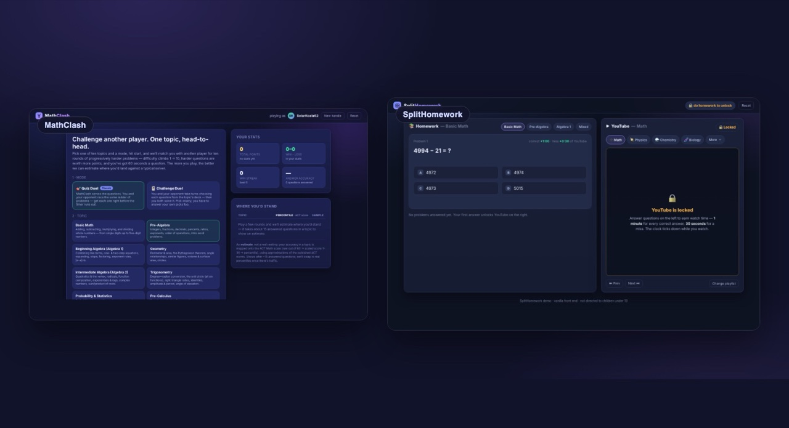
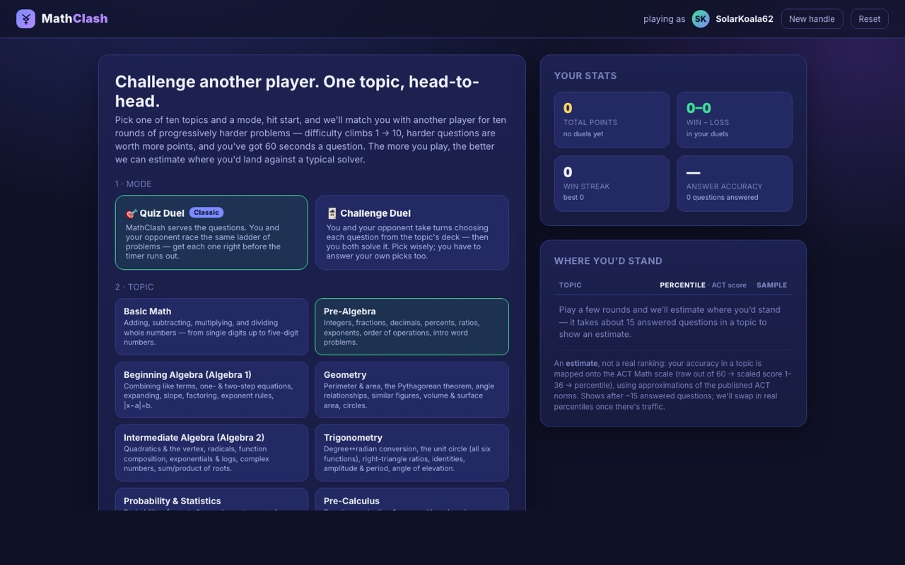
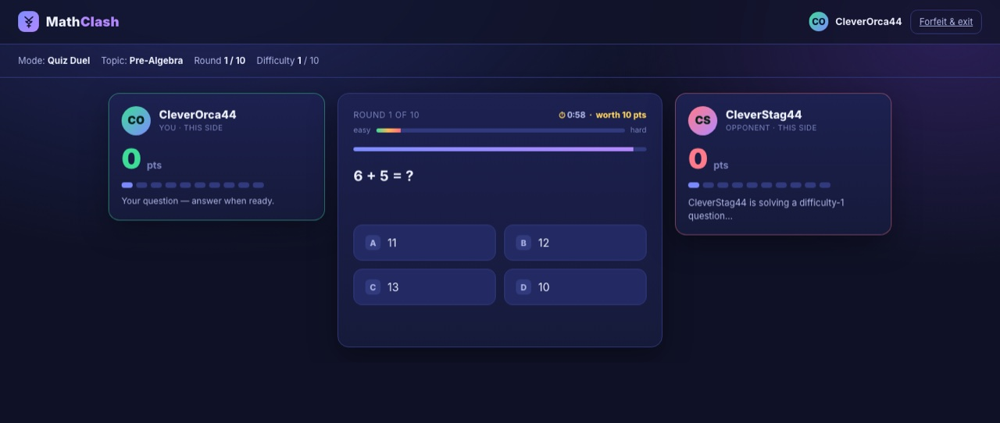
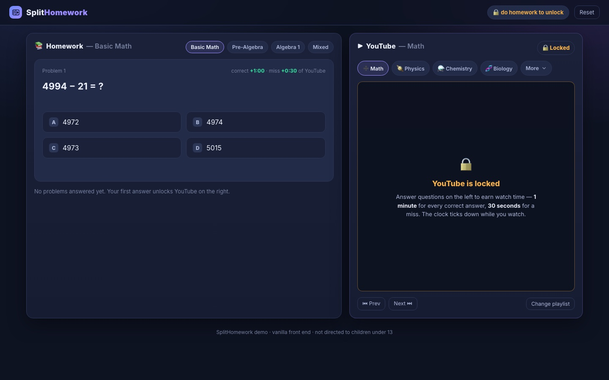

MathClash and SplitHomework are self-initiated products. For each one I wrote the thesis, ran the research, drew up the productization build plan, and designed and coded the working app — then deployed it. They're demos, not businesses, and the deliverables say so plainly. Together they're what 0→1 product work looks like when one person owns the whole stack: a problem, the strategy behind it, and a real running thing.

Same method, two different problems: spot it, sharpen it into a thesis, ground it in research, plan the productization honestly, and ship working software.
MathClash and SplitHomework are educational web apps I built to take a product idea all the way to running software. MathClash is a 1v1 math duel that wraps a real difficulty ladder in low-stakes, near-peer competition. SplitHomework is a split-screen study tool that gates a YouTube feed behind completed homework — built for the phone-shaped attention span, and especially for students with ADHD. Different problems, but the same approach behind both: a narrow claim, the research to back it, a realistic plan to productize it, and a designed-and-coded app that demonstrates the loop.
Each one came with a full set of product artifacts, not just code. For both apps there's a product thesis (one deliberately narrow, falsifiable claim, plus the bets that would disprove it), a research brief (every quantitative claim cited to a real source — what couldn't be verified is flagged, not invented), and a productization build plan (a strategic fork that picks a customer, a gap analysis against the existing tools, a phased roadmap, team and budget, the top risks, and a build-vs-partner call). Then the actual app — UI and front-end code — running live.
The honest framing: these are demos. No users, no efficacy data, scope kept deliberately narrow — and the build plans and research briefs say exactly that. What they demonstrate is the full arc done by one person: noticing a problem, turning it into a thesis, grounding it in real research, planning the productization without hand-waving the cost, and shipping working software — design, code, and the writing in between.
A near-peer, low-stakes math duel wrapped around a real difficulty ladder — and an ACT-style read on where you'd stand right now.

MathClash is a 1v1 math duel. You pick a topic, you're matched against another player, and you race each other through a stream of progressively harder questions — difficulty 1 to 10, points scaling with difficulty, a worked solution shown whenever you miss one (with a Skip button), and a one-minute clock per question. After enough rounds it shows an ACT-style "where you'd stand" percentile: your accuracy maps to a raw score out of 60, then a 1–36 scaled score, then a percentile. The opponent is simulated on the player's own machine but presented as a live player.
The thesis it's built around: near-peer, low-stakes, anonymous, repeated 1v1 competition wrapped around a real difficulty ladder is one of the few motivational structures with consistent evidence behind it for confident, high-achieving students — and no consumer product is squarely aimed at the capable kid whose school won't track them and whose family isn't plugged into the talent-search world. The build covers roughly 2,000 generated, correct-by-construction questions with worked solutions across ten topics, the percentile pipeline, and a mobile-friendly UI.

Why each clause of the thesis is load-bearing, who the capable-but-unserved kid is, why this flavour of competition (and not another), what we refuse to build, and the five bets that would prove the thesis wrong.
Open the PDF Research briefWhat the evidence actually says about competition and achievement (it splits people; it helps the confident high achiever), the talent-pipeline gap, and the design knobs each finding implies — every claim traced to a real source.
Open the PDF Build planThe strategic fork (pick the customer first), a gap analysis against schools, AoPS/CTY, and the mainstream practice apps, a phased roadmap, team and budget, the top risks, build-vs-partner, and a lean-MVP appendix.
Open the PDFA split-screen study tool: homework on the left earns short, metered bursts of an educational feed on the right — built for the phone-shaped attention span, and especially for ADHD.

SplitHomework is a split-screen study tool. Homework on the left — runtime-generated math problems with worked solutions — and a YouTube panel on the right that stays locked until you earn time. A correct answer banks one minute, a wrong one thirty seconds, capped at ten; the clock ticks down while you watch and the panel re-locks at zero. The feed is curated educational playlists across sixteen categories (the sciences, history, languages, and more), reached from a few quick-pick chips plus a custom dropdown.
The thesis it's built around: short-form video has trained a generation's reward system to expect fast, frequent payoffs, and for students with ADHD the mismatch with slow, low-feedback schoolwork is the wall they hit nightly. Rather than fight that wiring with abstinence, SplitHomework channels it — the instant-reward feed is gated behind completed schoolwork, which is the contingency-management / Premack ("first, then") structure with the strongest evidence behind it for this population. It's framed as lowering the activation energy to start and re-engage with homework — the real ADHD pain point — not as "training multitasking," which the literature does not support. The research brief grounds each claim in a real source and is explicit about what isn't proven.
The "channel the wiring, don't fight it" bet, why each design choice is load-bearing (same-screen reward, lock-by-default, small metered bursts, educational-only feed), an honest evidence stance, and the signals that would prove it wrong.
Open the PDF Research briefThe attention-span trend, kids' short-form-video exposure, an honest treatment of the "rising appetite for instant gratification" premise, ADHD (delay aversion, reward sensitivity, homework), what works for ADHD learning — about 17 cited sources, with an explicit list of what it does not assert.
Open the PDF Build planThe strategic fork (wedge: consumer parents of ADHD kids), a gap analysis against focus timers, blockers, screen-time-budget apps and practice apps, a phased roadmap (incl. a real browser-level gate), team and budget, the top risks, and build-vs-partner.
Open the PDFNot "look at these businesses" — they aren't. It's how I take something from a problem to a shippable product when I own the whole stack.
The full 0→1 arc, done by one person. Problem → thesis → research → build plan → designed-and-coded app → deployed. Each of these is a real running thing with the strategy work in front of it, not a deck about a product that doesn't exist. The same loop I'd run inside a company — just compressed, and visible end to end.
Discipline in the writing, not just the code. The research briefs trace every quantitative claim to a real URL and flag the things that couldn't be verified rather than inventing them. The theses are written as one narrow, falsifiable claim with the bets that would disprove it. The build plans pick a customer, name the gap honestly, and don't hand-wave the cost or the risk — including, for SplitHomework, the uncomfortable fact that the in-app lock is bypassable and a real version needs a browser-level block, which the plan says outright.
And an honest sense of scope. These are demos: no users, no efficacy data, deliberately narrow. The point is the method — spotting a problem, sharpening it, grounding it, planning it without illusions, and shipping working software — and the range it covers: product thinking, research, strategy, UI design, and front-end code, in one person's hands.